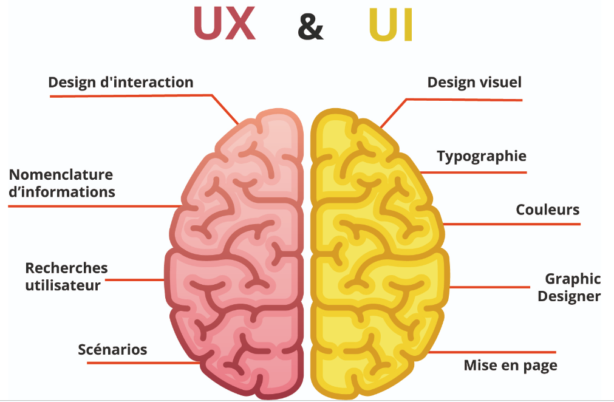
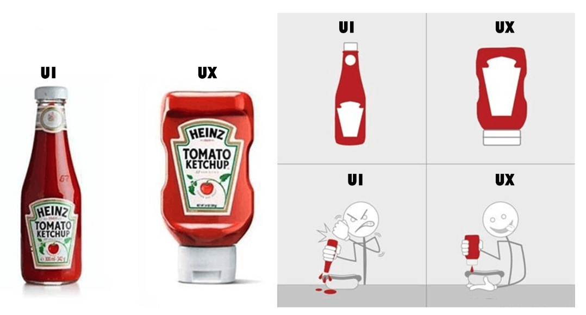

UX (User Experience) et UI (User Interface) sont deux termes importants en web design et se réfèrent à des aspects différents mais complémentaires de la conception d'un site web ou d'une application.
User Experience
L'expérience utilisateur (UX) se concentre sur la satisfaction globale et l'émotion ressentie par les utilisateurs lorsqu'ils interagissent avec un site web ou une application. L'objectif de l'UX est de rendre l'expérience utilisateur agréable, intuitive et conviviale.
Cela implique de comprendre les besoins, les attentes et les comportements des utilisateurs, puis de concevoir l'interface et le flux de navigation de manière à répondre à ces besoins de manière efficace.
Les principaux aspects de l'UX incluent :
User Interface
L'interface utilisateur (UI) se concentre sur l'apparence visuelle et la convivialité des éléments interactifs d'un site web ou d'une application. L'objectif de l'UI est de créer une interface esthétiquement plaisante, cohérente et facile à utiliser.
Cela implique de concevoir des éléments graphiques tels que les boutons, les icônes, les formulaires, les couleurs et les polices, en veillant à ce qu'ils soient alignés avec l'identité visuelle de la marque.
Les principaux aspects de l'UI incluent :

En résumé, UX se concentre sur la manière dont les utilisateurs interagissent avec un site web ou une application pour améliorer leur expérience globale, tandis que UI se concentre sur l'apparence visuelle et la convivialité des éléments interactifs pour rendre l'interface agréable et facile à utiliser.
Les deux disciplines sont essentielles pour créer une expérience utilisateur réussie et harmonieuse.